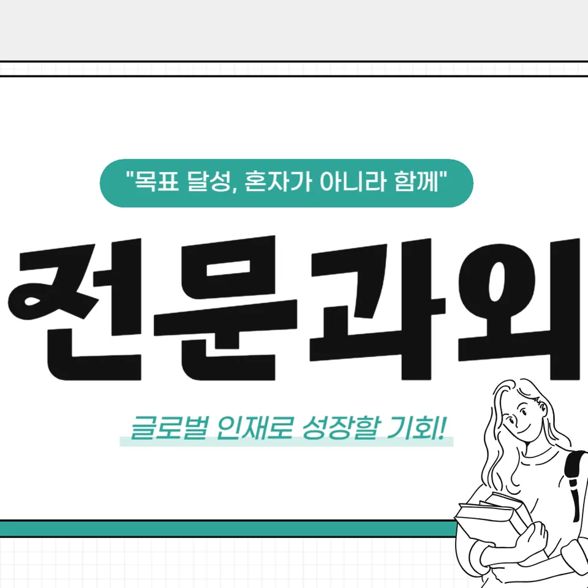

PageType : SUBJECT
URL : /경기도과외/안양시과외/동안구과외/관양동과외/관양동영어과외/
지역 교육환경이 영어 학습에 미치는 영향
관양동영어과외를 찾는 학생들은 대체로 학원 중심의 학습 분위기에 자연스럽게 노출되어 있습니다. 그래서 수업을 시작한 뒤에는 “새로 배운 영어”보다 “지금 하고 있는 공부 흐름”을 먼저 정리해야 흔들림이 줄어듭니다. 학교 수업이 끝난 뒤에도 독해, 듣기, 어휘가 동시에 굴러가야 하는데, 지역 학습 환경은 속도가 빠른 편이라 관양동영어과외에서도 과제 누적이 먼저 문제로 나타납니다.
특히 관양동영어과외에서 관찰되는 공통점은 학생들이 영어 시간 자체를 ‘숙제 처리’로 인식하는 순간입니다. 이 시기가 지나면 시험 대비가 앞당겨지고, 영어 실력은 늘었다고 느끼는 체감이 늦어지기 쉽습니다. 그 결과 학생은 학습 의욕이 떨어지며, 학부모는 “무엇을 더 해야 하는지”를 자주 묻게 됩니다. 이때는 학교에서 쓰는 표현과 평가 기준을 연결해 학습을 다시 안정화시키는 방식이 중요합니다.
학교마다 달라지는 영어 평가 방식
관양동영어과외에서 학교마다 내신 운영이 다르다는 점은 반드시 확인해야 합니다. 어떤 학교는 수행평가 비중이 커서 수업 중 발화나 과정 점검이 영향을 주고, 또 다른 학교는 서술형과 구문 이해가 핵심이 되는 경우가 많습니다. 그래서 같은 영어 과목이라도 관양동영어과외의 학습 방향은 ‘한 가지 기술’에만 머무르지 않고, 시험이 요구하는 형태로 독해와 듣기 결과를 재배열하도록 잡아야 합니다.
평가 방식이 달라질 때 학생은 결과만 보고 원인을 놓치기 쉽습니다. 예를 들어 문법을 아는 듯했는데도 내신에서 감점이 생기면, 실제로는 문장 구조를 읽는 속도나 선택 판단의 기준이 달랐던 경우가 흔합니다. 관양동영어과외에서는 이 차이를 오답의 언어로 기록하게 만들고, 복습 때마다 같은 유형의 실패가 반복되는지 체크합니다.
학생들이 영어에서 어려움을 느끼는 시점
대부분의 학생은 “어휘를 알 것 같은데 해석이 안 되는 순간”을 겪습니다. 관양동영어과외에서 그 시점은 대체로 중간 점검 이후에 선명해집니다. 듣기에서 놓친 단서를 문장 속 의미로 되돌리는 과정이 부족하면, 독해 지문에서도 핵심 문장 구성이 흐려져 영어 실력이 쌓인 느낌이 사라집니다.
학습 부담이 커지는 또 다른 타이밍은 학년이 올라갈 때입니다. 관양동영어과외는 이 시기에 공부 습관을 단순히 늘리는 방식이 아니라, 학습 시간을 ‘질’로 재구성하도록 돕습니다. 학생은 시간은 쓰지만 누적이 안 되는 상태에서 좌절하고, 학부모는 오답 분석이 어디까지 필요한지 더 구체적으로 확인하게 됩니다. 그래서 관양동영어과외에서는 영어 학습이 끊기지 않도록 작은 단위 복습과 자기주도학습 루틴을 먼저 붙입니다.
학년 변화에 따른 영어 학습의 차이
초반에는 문장 해석의 규칙을 손에 쥐는 느낌이 강하지만, 학년이 올라가면 구문을 읽는 속도와 판단이 더 요구됩니다. 관양동영어과외의 학습 과정은 여기서 전환점을 만듭니다. 어휘는 ‘새로 배우기’에서 ‘쌓아서 꺼내 쓰기’로 바뀌고, 문법은 설명을 들은 뒤 바로 적용하는 경험으로 이어져야 합니다.
이 시기에는 듣기와 읽기의 균형이 무너지기 쉽습니다. 어떤 학생은 듣기를 쉽게 느껴 오래 붙잡고, 다른 학생은 독해에만 집중해 문맥 연결이 약해집니다. 관양동영어과외에서는 두 영역을 따로 늘리기보다, 학교 시험이 평가하는 방식에 맞춰 같은 주제나 유형을 순환시키며 학습이 이어지도록 설계합니다. 그 결과 학생의 영어 실력은 ‘한 번에 오르는 느낌’보다 ‘자주 안정되는 정확도’로 나타납니다.
내신과 수행평가를 함께 준비하는 방법
내신은 시험 범위를 기준으로 움직이지만, 수행평가는 수업 과정과 연결되어 변수가 생깁니다. 관양동영어과외에서는 먼저 학교의 평가 요소를 학습 흐름으로 번역합니다. 학생이 수업에서 겪는 표현을 듣기에서 확인하고, 독해에서 의미로 확장하며, 어휘와 문법은 정답 문장 안에서 형태를 확인하도록 유도합니다.
수행평가 준비를 하다 보면 ‘준비는 했는데 결과가 불안’한 상태가 자주 생깁니다. 이때는 오답이 단순히 틀린 답이 아니라, 학생이 어떤 문장을 오해했는지 보여주는 자료라는 점을 활용합니다. 관양동영어과외에서는 복습 시간을 시험 전 일회성으로 끝내지 않고, 오답이 남긴 패턴을 다음 단원 학습과 연결해 반복을 줄입니다. 결국 내신과 수행평가가 같은 방향으로 굴러가면서 학습 계획이 안정됩니다.
꾸준한 학습 습관이 만드는 영어 실력
영어 학습에서 가장 큰 차이는 ‘공부의 양’보다 ‘공부습관의 지속성’에서 발생합니다. 관양동영어과외를 하는 동안 학생들은 처음엔 단기 목표를 세우지만, 시간이 지나면 매일의 루틴이 필요해집니다. 독해를 매번 길게 하기보다 짧게 읽고 다시 확인하는 습관, 어휘를 한 번 외우고 끝내지 않는 습관이 영어 실력을 실제로 바꾸는 경우가 많습니다.
시험 기간에는 학습 패턴이 바뀌면서 듣기와 읽기가 한쪽으로 쏠립니다. 그래서 관양동영어과외에서는 시험 전후로 균형을 다시 맞추는 체크리스트를 활용하게 합니다. 오히려 시험이 끝난 뒤 더 중요한 단계가 생기는데, 그때 복습과 오답 정리가 누적되며 자기주도학습이 자리 잡습니다. 학생이 스스로 다음 공부를 선택할 수 있게 되면 학습이 멈추지 않습니다.
복습과 오답 관리가 중요한 이유
오답은 ‘다음에 또 틀릴 가능성’이 있는 신호입니다. 관양동영어과외에서는 오답을 답지 위에 두지 않고, 왜 틀렸는지의 이유를 문장과 연결해 기록하게 합니다. 문법을 잘못 적용했는지, 어휘 의미를 좁게 해석했는지, 듣기에서 놓친 단서가 독해 추론을 흔들었는지 구분됩니다.
복습은 단순히 다시 보는 행위가 아니라, 같은 오류를 반복하지 않도록 구조를 바꾸는 과정입니다. 학생은 오답을 통해 자신의 약한 구문을 인식하고, 그 구문을 다음 학습에서 의도적으로 마주치게 됩니다. 학부모는 이 흐름을 보면 “열심히 하는데 왜 불안한지”를 덜 걱정하게 됩니다. 결과적으로 영어 실력은 점수로만 오르지 않고, 해석 속도와 문장 이해가 함께 안정화됩니다.
영어 학습에서 확인해야 할 핵심 요소
관양동영어과외에서 확인하는 핵심 요소는 한 가지로 끝나지 않습니다. 학교에서 배우는 영어는 독해, 문장 이해, 어휘 누적, 구문 인식, 듣기 단서 활용이 한 덩어리처럼 이어져야 합니다. 학생이 문법을 배울 때도 실제 문제에서 어떤 문장 행동이 바뀌는지 확인해야 하고, 어휘는 단어 목록이 아니라 문맥 속에서 의미가 확장되는 방식으로 쌓여야 합니다.
또한 시간 효율은 계획이 만든 결과입니다. 학생이 공부 시간을 늘려도 계획이 흔들리면 복습이 밀리고, 오답이 누락되어 다음 시험에 같은 실수가 다시 등장합니다. 관양동영어과외에서는 학습 계획을 꾸준히 유지하는 과정을 점검하며, 시험 전에는 목표를 좁히고 시험 후에는 오답과 복습으로 회복하는 패턴을 만들게 합니다. 영어 실력은 이렇게 단계적으로 성장합니다. 학교와 가정에서 이어지는 환경이 맞물릴 때, 학생은 스스로 학습을 조절하는 능력까지 얻게 됩니다.
자주 묻는 질문
관양동영어과외를 통해 영어 학습은 언제부터 체계적으로 준비하는 것이 좋을까요?
시험이 임박해서 시작하기보다, 학교에서 단원이 바뀌는 시점에 맞춰 듣기·독해·어휘·문법의 균형을 먼저 점검하는 것이 좋습니다. 특히 학생이 어려움을 느끼는 시점이 오면 그때부터 복습 루틴과 오답 기록을 함께 붙여야 학습이 흔들리지 않습니다.
학교 내신과 모의고사는 어떻게 함께 준비해야 하나요?
내신은 학교 시험 범위와 평가 방식에 맞춰 학습을 정렬하고, 모의고사는 독해와 문장 이해의 속도·정확도처럼 확장되는 부분을 다듬는 흐름으로 나누는 방식이 안정적입니다. 관양동영어과외에서는 오답이 두 시험에서 반복되는지 확인하며 공부 방향을 조정합니다.
영어 독해 실력은 어떤 과정으로 향상될 수 있나요?
처음엔 문장 해석이 늘었다고 느끼지만, 시간이 지나면 구문을 빠르게 읽고 의미를 연결하는 능력이 핵심이 됩니다. 그래서 관양동영어과외에서는 지문을 읽고 끝내지 않고, 어휘 누적과 문법 적용, 문맥 추론이 어떻게 연결되는지 복습에서 다시 확인합니다.
어휘와 문법은 어떤 순서로 학습하는 것이 효과적인가요?
어휘는 단어 의미를 외우는 데서 멈추지 않고 문장 속에서 쓰임이 어떻게 달라지는지 확인해야 합니다. 문법은 설명을 기억하기보다 구문이 달라질 때 해석이 어떻게 바뀌는지 경험하며 적용하는 순서로 이어질 때 효과가 큽니다. 관양동영어과외는 이 연결을 오답 관리로 굳힙니다.
공부 습관을 꾸준히 유지하려면 무엇이 중요할까요?
자기주도학습은 의지로만 유지되지 않고, 복습·오답·다음 학습 선택이 연결된 루틴에서 만들어집니다. 관양동영어과외에서는 시험 기간 학습 패턴이 흔들릴 때도 균형을 되찾는 방법을 점검하며, 학생이 스스로 학습 계획을 유지하도록 돕습니다.
